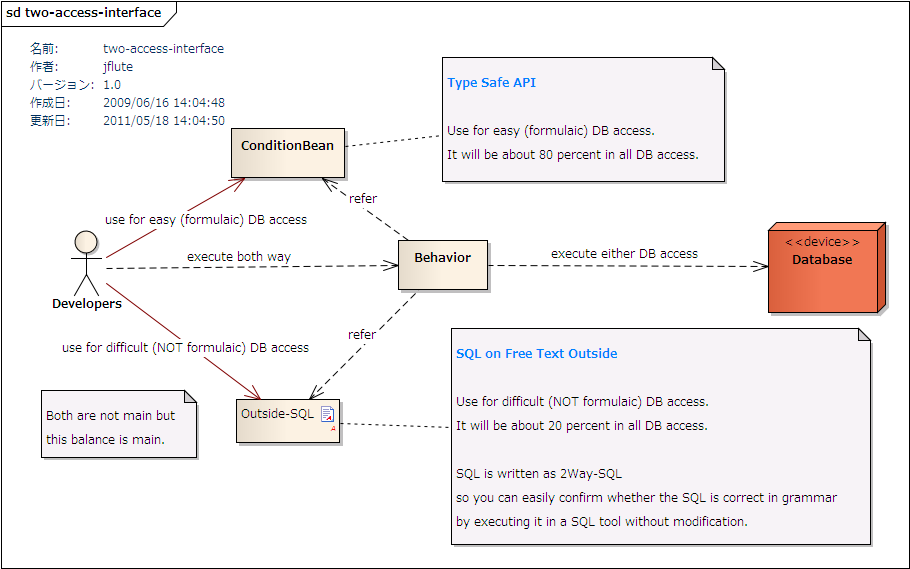

バランス重視のDBアクセスI/F
DBFluteが提供する バランス重視 のDBアクセスI/F(インターフェース)について説明します。
${indexlist}バランス重視
DBFluteは、タイプセーフな検索条件API ConditionBean と、自由度が高いながらSQLの安全性を保てる 外だしSQL(OutsideSql) を利用し、その適材適所のバランスを重視しています。
- よくあるSQL
- ConditionBean *タイプセーフ＆目的ドリブン
- ちょいムズSQL
- 外だしSQL(OutsideSql) *2Way-SQL
e.g. MEMBER(会員)テーブルの検索(ConditionBean) @Java
MemberCB cb = new MemberCB();
cb.query().setMemberName_Equal("Stojkovic");
e.g. MEMBER(会員)テーブルの検索(OutsideSql) @OutsideSql
select member.MEMBER_ID, ...
from MEMBER member
where member.MEMBER_ID = /*pmb.memberName*/'Savicevic'
図 : バランス重視のDBアクセスの概念図 
{kind=link}
外だしSQLの重要性
複雑(非定型)なSQLは、アプリケーションで肝となるDBアクセスロジックである可能性が高いです。 その複雑性からバグも発生しやすく、時には実行計画と睨めっこしなければならないような大事な大事なSQLであり、それらは 2Way-SQL を大いに活用して最適なSQLを作り上げます。
全て外だしSQLで実装したら？
しかし、簡単(定型的)なSQLまで外だしSQLを実装するのはそれはそれで問題が発生します。
- DB変更に非常に弱い
- SQL特有のケアレスミスが多発
- SQLの命名やフォーマット等の規約の不統一による可読性の劣化
- 大量のSQLファイルの管理コスト
実装数の割合は、複雑(非定型)なSQLに比べて簡単(定型的)なSQLの方が圧倒的に多く、上記のような問題が発生します。これらは 2Way-SQL のおかげで大分解消はされますが、完全ではありません。
ConditionBeanでバランスを得る
そこでDBFluteは、簡単(定型的)なSQLに関しては完全タイプセーフな "ConditionBean" で安全かつ速い実装を提供し、 その分、現場のディベロッパーには複雑(非定型)なSQLに集中してもらいたいという考えを持っています。
理想的にはどちらか片方の方法で全てのSQLを実現できるのが良いに決まっています。 しかし、それはシビアな開発期間、シビアなパフォーマンス要件など様々な要因を考えると不可能であり、 バランスを重視したDBアクセスI/Fが(少なくとも今の時代の)現場に一番フィットすると判断しました。
およそ、8 割を ConditionBean で、2 割を 外だしSQL(OutsideSql) で！
とにかく二つの方法を覚えればよい
もちろん、いくらバランスと言ってもやり方が三つも四つも存在すると、わかりやすさが半減しディベロッパーの学習コストが高くなって効率が良くありません。 また、都度都度プロジェクトでどの方法をどう使っていくかの実装ポリシー策定も必要になってしまいます。 これは他のO/Rマッパでありがちな問題でした。ディベロッパーがどれをどうやって実装すれば良いのか迷うのです。 DBFluteでは、とにかく二つだけ ConditionBean と 外だしSQL(OutsideSql) を覚えてDBアクセスします。どのプロジェクトであろうとポリシーは同じです。
また、ConditionBean は完全タイプセーフであるがゆえに(*1)逆に実現できることが限られ、外だしSQLとの棲み分けはハッキリしています。 ConditionBeanのスコープ といったようなドキュメントも用意され、ディベロッパーは一定の判断の流れで実装していくことができます。
*1: 部分的なSQLをアプリケーションプログラム上で文字列として設定することはできないため、プログラム上での "自由で危険な埋め込みSQL" が抑制されています。
酸素と水、どっちが大事？
DBFluteには ConditionBean という強烈な個性があることから、外だしSQLに対する扱いが誤解されてしまうこともありますが、"どっちの方が大事？" という概念は存在しません。バランスが大事であって、そのバランスを支える二つの要素が "ConditionBean" と "外だしSQL" なのです。
酸素と水、どっちが大事でしょうか？ その答えを出すことに意味はないでしょう。命の長らえ方が違うだけで、どちらもなくてはならないものです。DBFluteでは、開発現場における "外だしSQL" と "ConditionBean" の存在価値をこのように捉えています。